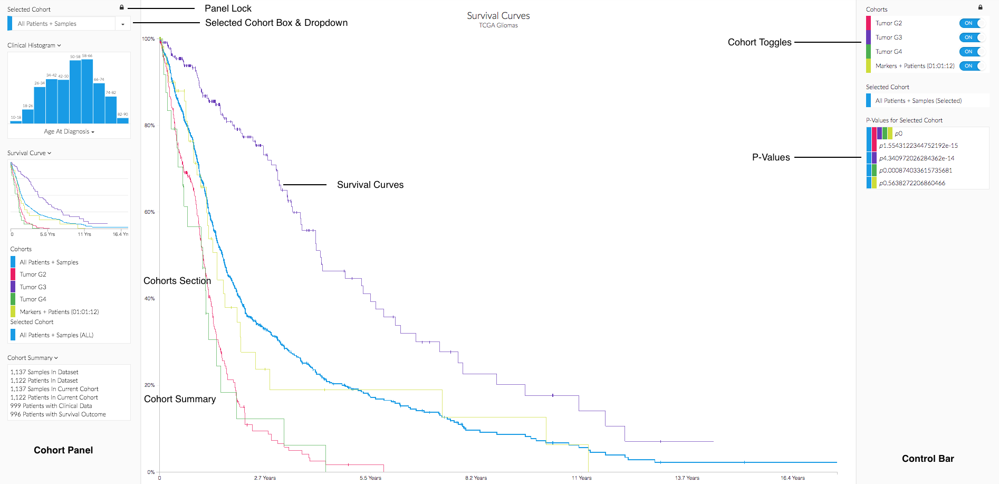

@@include('./app/partials/header.p')
<!-- START wrapper -->
<div class="content-wrapper">
    <!-- START intro seciton -->
    <div id="section-intro" class="scrollto">
        <a class="anchor" id="anchor-intro">x</a>
        <div class="container">
            <div id="marquee" class="row">
                <div class="col-xs-12">
                    
                </div>
            </div>
            <div class="row">
                <h1 class="tool-headline">
                    <span class="header-black">Survival</span>
                    <span class="header-gray">View survival of saved chorts. Compare Kaplan Meier curves.</span>
                </h1>
            </div>
        </div>
    </div>
    <!-- END intro seciton -->
    <!-- START sticky nav-bar -->
    <div id="header" class="header">
        <div class="subnav container">
            <a class="subnav-item col-xs-12 col-sm-2 col-sm-offset-1" href="#anchor-overview">Overview</a>
            <a class="subnav-item col-xs-12 col-sm-2" href="#anchor-cases">Use Cases</a>
            <a class="subnav-item col-xs-12 col-sm-2" href="#anchor-nav">Navigation</a>
            <a class="subnav-item col-xs-12 col-sm-2" href="#anchor-methods">Methods</a>
            <a class="subnav-item col-xs-12 col-sm-2" href="#anchor-faq">FAQ</a>
        </div>
    </div>
    <!-- END sticky nav-bar -->
    <!-- START Overview seciton -->
    <div class="scrollto" id="section-overview">
        <a class="anchor" id="anchor-overview">x</a>
        <div class="container">
            <div class="row">
                <div class="col-xs-12 text-center">
                    <h3 class="section-headline  fadeInDown animated">Overview</h3>
                </div>
            </div>
            <div class="row">
                <div class="col-xs-12 text-left">
                    <p>Survival allow users to create patient cohorts in other tabs and view those survival rates of each patient cohort in a single graph. By default, the survival curves are shown for All Patients + Samples.</p>
                </div>
            </div>
            <div class="row">
                <div class="col-xs-12">
                    
                </div>
            </div>
            <div class="row">
                <div class="col-xs-12 li-margin">
                    <ul>
                        <li class="overview-li-padding"><em>Panel Lock:</em> Lock and unlock the panels for a wider screen view.
                        </li>
                        <li class="overview-li-padding"><em>Cohort Panel:</em> All cohort related commands are handled within this panel.
                        </li>
                        <li class="overview-li-padding"><em>Selected Cohort Box & Dropdown:</em> Add, edit or delete cohorts. Click the "+" to save, "x" to delete or click the down arrow to select a cohort for edits.</li>
                        <li class="overview-li-padding"><em>Clinical Histogram:</em> Snapshot of clinical information, per cohort. The histogram will adjust with each cohort selection. &nbsp; Click the down arrow to view other filters. e.g. &nbsp; Age At Diagnosis, Gender, Race, Ethnicity, Vital, Tumor.</li>
                        <li class="overview-li-padding"><em>Survival Curve:</em> Snapshot of Kaplan Meier survival curves, per cohort. For more in depth analysis push the saved cohorts to the survival tool.</li>
                        <li class="overview-li-padding"><em>Cohorts Section:</em> All saved cohorts are listed in this area. Each cohort is clickable and will highlight the selections on the main window, as well as adjust any survival curves or clinical histograms that are associated. The last line will always show your current selection, which will also update in the <strong>Selected Cohort</strong> box at the top of the cohort panel. All cohorts are color coded for easy identification. To learn more visit <a href="" target="_blank">Oncoscape</a></li>
                        <li class="overview-li-padding"><em>Cohort Summary:</em> Every cohort includes a summary of available information based on patients and samples.</li>
                        <li class="overview-li-padding"><em>Cohort Toggles:</em> Switch the survival curves on or off.</li>
                        <li class="overview-li-padding"><em>P-Values:</em> Comparisions for each selected cohort.</li>
                    </ul>
                </div>
            </div>
        </div>
    </div>
    <!-- END Overview seciton -->
    <!-- START Use Cases seciton -->
    <div class="scrollto" id="section-cases">
        <a class="anchor" id="anchor-cases">x</a>
        <div class="container">
            <div class="row">
                <div class="col-xs-12 text-center">
                    <h3 class="section-headline fadeInDown animated">Use Cases</h3>
                </div>
            </div>
            <section class="videoCurrent col-xs-12 col-md-7">
                <div class="videoPlayerContainer">
                    <iframe class="videoPlayer" width="560" height="315" frameborder="0" allowfullscreen></iframe>
                </div>
                <h3 class="videoCurrentTitle"></h3>
                <p class="videoCurrentTranscript"></p>
            </section>
            <section class="videos noselect col-xs-12 col-md-5">
                <article class="video">
                    <div class="videoThumb" style="background-image: url(photos/survivalNavigation/videotwo.png);"></div>
                    <a class="videoLink" href="https://www.youtube.com/embed/yR-Cf1zZt1Y?rel=0&amp;controls=0&amp;showinfo=0"></a>
                    <h4 class="videoTitle">View cohorts survival curves</h4>
                    <p class="videoParagraph">After cohorts are push to survival view all or selected curves in the graph.</p>
                    <section class="videoTranscript">
                        <ol class="video-ol">
                            <div class="li-margin">
                                <li>Saved cohorts on left have been pushed from other analysis tools (e.g, Markers + Patients, Timelines).</li>
                                <li>Each saved cohort generates a survival curve on the graph, including patient information.</li>
                                <li>Toggle cohort surival curves on/off using the control bar.</li>
                            </div>
                        </ol>
                    </section>
                </article>
            </section>
        </div>
    </div>
    <!-- END Use Cases seciton -->
    <!-- START Nav seciton -->
    <div class="scrollto" id="section-nav">
        <a class="anchor" id="anchor-nav">x</a>
        <div class="container">
            <div class="row">
                <div class="col-xs-12 text-center">
                    <h3 class="section-headline fadeInDown animated">Navigation</h3>
                </div>
            </div>
            <div class="row">
                <div class="col-xs-12 text-left">
                    <strong>Survival Curves</strong>
                </div>
            </div>
            <div class="row">
                <div class="col-xs-12 text-left">
                    <p class="search-para">Switch the survival curves ON or OFF in the <em>Cohorts</em> toggle box.</p>
                </div>
            </div>
            <!-- START cohorts Tween slideshowFactory -->
            <div class="row">
                <div class="col-xs-12 img-responsive" id="leftImageSurvival"></div>
                <div class="col-xs-12 img-responsive" id="rightImageSurvival"></div>
            </div>
            <!-- END cohorts Tween slideshowFactory -->
            <hr>
            <div class="row">
                <div class="col-xs-12 text-left">
                    <strong>P-Values</strong>
                </div>
            </div>
            <div class="row">
                <div class="col-xs-12 text-left">
                    <p class="search-para">P-values are generated for each selected cohort. In this example the cohort All Patients + Samples P-Values are being compared to all saved cohorts. Each cohort is color-coded to match the cohort panel.</p>
                </div>
            </div>
            <div class="row">
                <div class="col-xs-12 text-left">
                    
                </div>
            </div>
        </div>
    </div>
    <!-- END Nav seciton -->
    <!-- START Methods+Data seciton -->
    <div class="scrollto" id="section-methods">
        <a class="anchor" id="anchor-methods">x</a>
        <div class="container">
            <div class="row">
                <div class="col-xs-12 text-center">
                    <h3 class="section-headline fadeInDown animated">Methods</h3>
                </div>
            </div>
            <p class="text-left">Oncoscape hosts <a class="methods-color" href="https://wiki.nci.nih.gov/display/TCGA/Data+level#Datalevel-RelationshipsBetweenDataTypeandDataLevel" target="_blank">level 3</a> public TCGA datasets representing gene and patient data downloaded from <a class="methods-color" href="https://xenabrowser.net/datapages/?host=https://tcga.xenahubs.net" target="_blank">UCSC Xena.</a> To review this data in depth visit our <a class="methods-color" href="http://resources.sttrcancer.org/api" target="_blank">data API. </a>User planning to publish on the provided data must adhere to all publishing guideline set by the <a class="methods-color" href="https://cancergenome.nih.gov/publications/publicationguidelines" target="_blank">NIH</a>. Datasets in Oncoscape are classified by disease type according to TCGA studies. </p>
            <p class="text-left">Generation of the curves achieved by Kaplan-Meier methods, ported to javascript.</p>
        </div>
    </div>
    <!-- END Methods+Data seciton -->
    <!-- START faq seciton -->
    <div class="scrollto" id="section-faq">
        <a class="anchor" id="anchor-faq">x</a>
        <div class="container">
            <div class="row">
                <div class="col-xs-12 text-center">
                    <h3 class="section-headline fadeInDown animated">Frequently Asked Questions</h3>
                </div>
            </div>
            <div class="container">
                <div id="divlist">
                    <a class="faq-color" role="button" data-toggle="collapse" data-target="#collapse-3">How do I export or print my graphs?</a>
                    <div id="collapse-3" class="collapse">
                        <p class="collapse-para">Currently, the export feature is only available on the Spreadsheet tool. Users can push saved cohorts to the spreadsheet tool by clicking the the Analysis Tool button at the top of the screen. Once there click the <em>CSV Export</em> button of either all the data or only the selected data. An Excel file will be generated.
                        </p>
                    </div>
                    <hr>
                    <a class="faq-color" role="button" data-toggle="collapse" data-target="#collapse-4">How do I save my data for a return visit?</a>
                    <div id="collapse-4" class="collapse">
                        <p class="collapse-para">All data for selections and cohorts will be automatically saved for a return visit assuming users are on the same computer to login. User logins that allow stored sessions from any device will be deployed in a future release.
                        </p>
                    </div>
                </div>
            </div>
        </div>
    </div>
    <!-- END faq seciton -->
</div>
<!-- END wrapper -->
@@include('./app/partials/footer.p')
